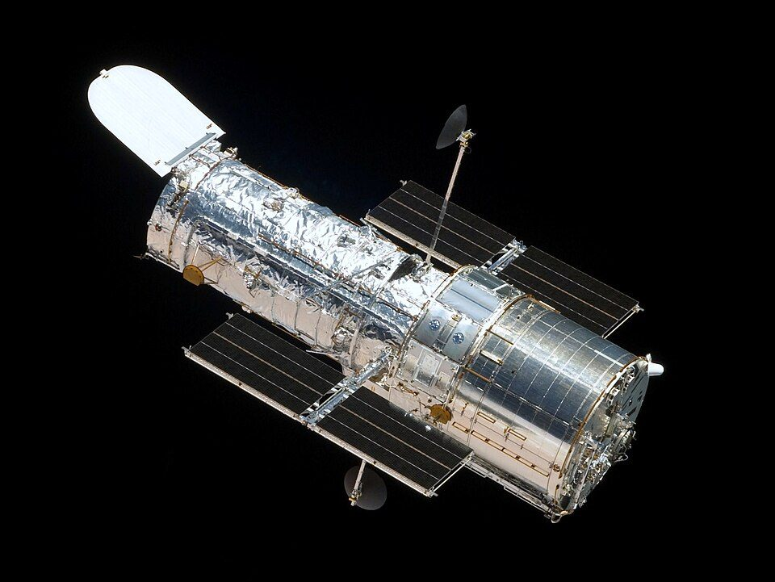

Telescopios espaciales
Por encima de la atmósfera, Hubble, Webb y Euclid han visto las galaxias más lejanas y los planetas de otras estrellas.


La atmósfera de la Tierra es una bendición para la vida, pero un estorbo para los astrónomos: hace titilar las estrellas y bloquea casi toda la luz infrarroja, ultravioleta y de rayos X. Por eso desde los años noventa hemos puesto telescopios en el espacio.
Hubble: el telescopio que cambió la astronomía
El telescopio espacial Hubble, de la NASA y la ESA, se lanzó en 1990 a bordo del transbordador Discovery. Al principio fue un fiasco: su espejo de 2,4 metros tenía un defecto de pulido de 2 micras, la cincuentava parte del grosor de un pelo, y las imágenes salían borrosas. En 1993 unos astronautas instalaron unas «gafas» correctoras y desde entonces ha tomado algunas de las imágenes más famosas de la historia.


Entre sus logros: medir la edad del universo, descubrir que la expansión se acelera, confirmar que casi todas las galaxias tienen un agujero negro central y el Campo Ultraprofundo, que muestra 10.000 galaxias en un trocito de cielo. Es el único telescopio espacial reparado por astronautas, en cinco misiones.
James Webb: viendo el amanecer cósmico
El telescopio espacial James Webb (NASA, ESA y Agencia Espacial Canadiense) se lanzó el 25 de diciembre de 2021 desde la Guayana Francesa en un cohete europeo Ariane 5. Su espejo de 6,5 metros está formado por 18 hexágonos de berilio recubiertos de oro y tuvo que viajar plegado como un origami. Está a 1,5 millones de kilómetros de la Tierra, en un punto llamado L2, protegido del Sol por un parasol del tamaño de una pista de tenis.
Observa en infrarrojo, la luz que emiten los objetos fríos y la luz estirada de las galaxias más lejanas. Ya ha encontrado galaxias que existían apenas 300 millones de años después del Big Bang, ha analizado las atmósferas de planetas de otras estrellas y ha retratado los planetas del sistema solar como nunca.
Otros grandes ojos en el espacio
| Telescopio | Años | Especialidad |
|---|---|---|
| Chandra (NASA) | 1999- | Rayos X: agujeros negros y restos de supernovas |
| Spitzer (NASA) | 2003-2020 | Infrarrojo: descubrió los siete planetas de TRAPPIST-1 |
| Kepler (NASA) | 2009-2018 | Encontró más de 2.600 exoplanetas |
| Gaia (ESA) | 2013-2025 | Mapa en 3D de casi 2.000 millones de estrellas |
| TESS (NASA) | 2018- | Busca planetas en las estrellas más cercanas |
| Euclid (ESA) | 2023- | Mapa del universo oscuro con miles de millones de galaxias |
| Nancy Grace Roman (NASA) | Lanzamiento previsto 2026-2027 | Gran campo infrarrojo: energía oscura y exoplanetas |
Vídeos para entenderlo mejor
- Las imágenes del Telescopio que los Científicos llevan 12 años esperando | EuclidAstrum Español · 764 mil visualizaciones
- ¡Tenemos Nuevo Super Telescopio! - El Telescopio Nancy Roman Explicado #nancyromanEl Robot de Platón · 437 mil visualizaciones
Los vídeos son de YouTube y de sus autores. Se cargan solo al pulsar sobre ellos. Ver todos los vídeos →